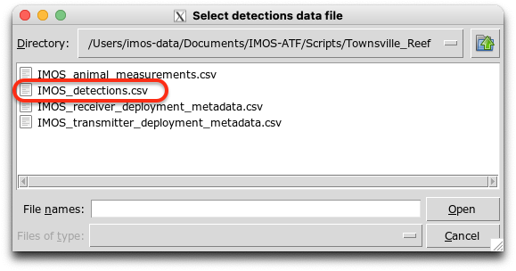
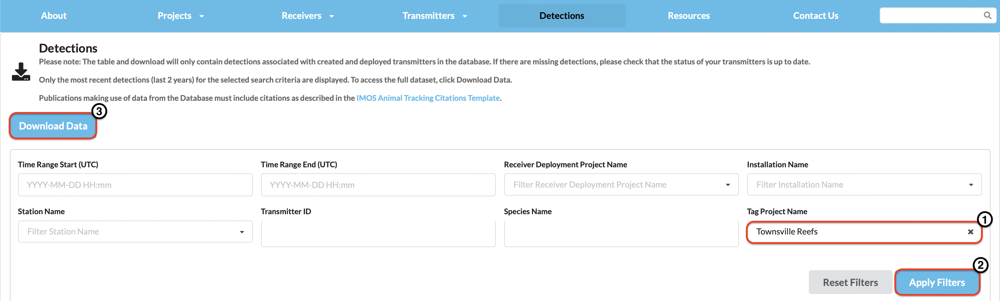
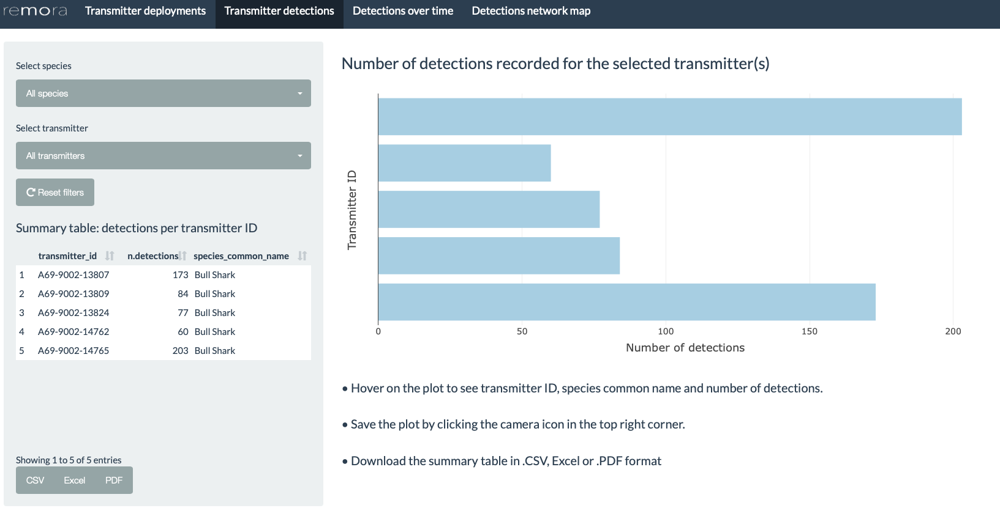
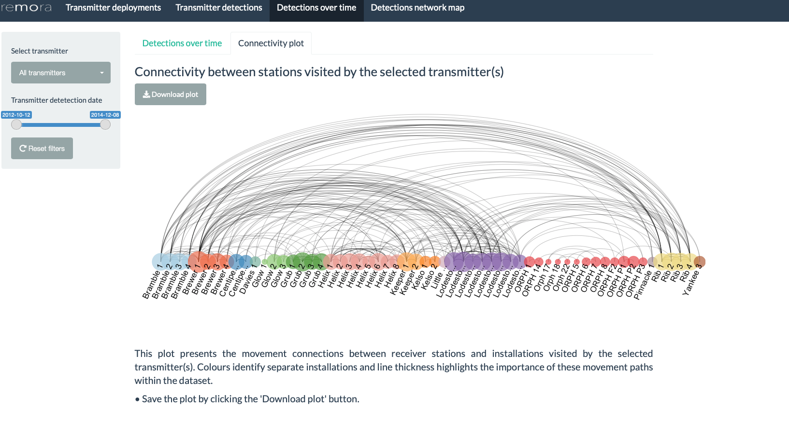
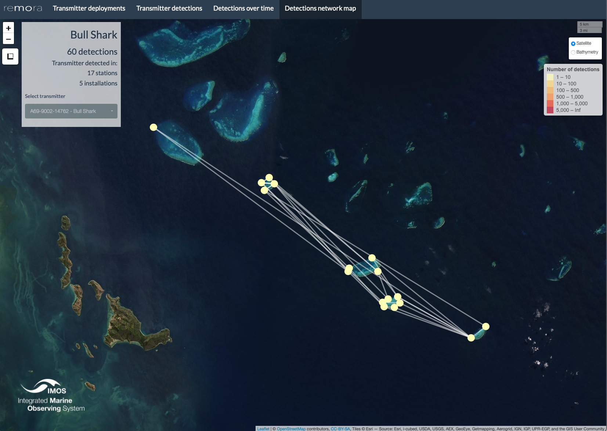

shinyReport_transmitters
Visualisations: Tagging Project
Source:vignettes/shinyReport_transmitters.Rmd
shinyReport_transmitters.RmdThe remora package includes statistics and data
visualisations for acoustic telemetry receiver array
and tagging projects. The shinyReport()
function allows users to create an interactive data report for their
projects, which comprises a range of visualisations and analytical tools
to aid data exploration and project management. The resulting plots and
tables can be downloaded for further use and analysis. This interactive
report is an exploratory tool and should not be considered an extensive
analysis toolkit.
Currently, the focus of the remora package is to
integrate animal telemetry data and oceanographic observations collated
by Australia’s Integrated Marine Observing
System. Therefore, the geographical scope of available datasets is
currently restricted to the Australasia region.
Tagging Project
The tagging report provides users with basic summary statistics and data visualisations for their acoustic telemetry tagging project. When called, the function produces an interactive Shiny App that will open in the user’s default internet browser.
Run Shiny App
The remora package should be installed prior to
calling the functions described in this vignette.
The shinyReport() function requires the user to specify
the type of report to produce. Two options are available depending on
whether the user wishes to produce a report for their receiver array
project (receivers) or tagging project
(transmitters).
This vignette describes the tagging project
(transmitters) report.
library("remora")
shinyReport("transmitters")The shinyReport() function will generate a pop-up window
enabling the user to navigate and select the detections data .CSV file
for the receiver array project of their choice. Note: the pop-up
window appears in the background of RStudio for some OS.

The detections file can be accessed via the IMOS Australian Animal Acoustic Telemetry Database. For this, the user can navigate to the Detections tab, filter the data by “Tag project name”, and download the detections.

Alternatively, the user can select their own data, previously formatted to match the IMOS database output format.
In this vignette, a sample dataset from the Townsville Reefs project (Heupel et al. 2021) archived in the IMOS Australian Animal Acoustic Telemetry Database is presented.
Transmitter deployments
Map showcasing the locations of transmitter deployments associated with the selected tagging project, colour-coded by species. The user can filter according to the species and/or date of the transmitter deployment.
Hovering on the markers will reveal additional information including the transmitter ID, species common name and deployment coordinates.

Transmitter detections
Bar plot presenting the number of detections recorded per transmitter, colour-coded by species. The user can filter by transmitter ID and/or species. Hovering on the bars will reveal additional information including the species common name and number of detections recorded. The plot can be downloaded by clicking on the camera icon in the top right corner.
The table on the left panel summarises the number of detections per transmitter per species. This summary table can be downloaded as a .CSV, Excel or .PDF file by clicking on the respective buttons.

Detections over time
This tab comprises an interactive abacus plot as well as a connectivity plot allowing the exploration of transmitter detections through time. Users can filter both plots according to the transmitter ID(s) and date range of interest. A warning message will appear if the date is out of range.
Abacus plot
Interactive plot of the detections over time for the selected transmitter(s), colour-coded according to the receiver installation they were detected at. Hovering on the plot will reveal additional information including the detection date, number of detections, species common name and transmitter ID.
The plot can be saved by clicking on the camera icon in the top right corner of the plot.

Connectivity plot
The connectivity plot represents movements recorded between receiver stations visited by the selected transmitter(s), coloured by the different installations in the dataset. Each node represents a station in the array, and the connections between the nodes describe the movement of the tagged animal between each station. The size of the node indicates the number of detections recorded by the station for the transmitter(s) selected.
The plot can be saved by clicking on the “Download plot” button.
Note: Since the connectivity plot is represented in a one-dimensional layout, it does not provide the overall structure of the network.
Warning: if the tagging project presents a high number of detections, it may incur some delays to load the plot. To avoid this, select a transmitter before clicking on the Connectivity plot tab.
Detections network map
The detections network map features the connectivity paths between detections recorded for the selected transmitter. Each marker on the map represents the station at which the transmitter was detected, colour-coded by the number of detections recorded (see legend on the right side of the map). The left panel also presents the species common name, total number of detections as well as stations and installations that the transmitter was detected at. The user has to select the transmitters one by one without deselecting the previous one for the map to show the network.

Warning: The map may take more time to load depending on the number of detections for the selected transmitter.
Note: To explore and visualise data relative to a receiver array project, head over to the shinyReport_receivers vignette
References
Heupel, M., Simpfendorfer, C., Espinoza, M., Bierwagen, S., de Faria, F., Lédée, E., Matley, J., Tobin, A. (2021) Townsville Reefs. Australian Institute of Marine Science and James Cook University. (Available: Integrated Marine Observing System. Animal Tracking Database. https://animaltracking.aodn.org.au. Accessed: 2021-10-11).
IMOS 2021. Animal Tracking Database. https://animaltracking.aodn.org.au. Accessed: 2021-10-11.
Vignette version 0.0.5 (5 Nov 2021)